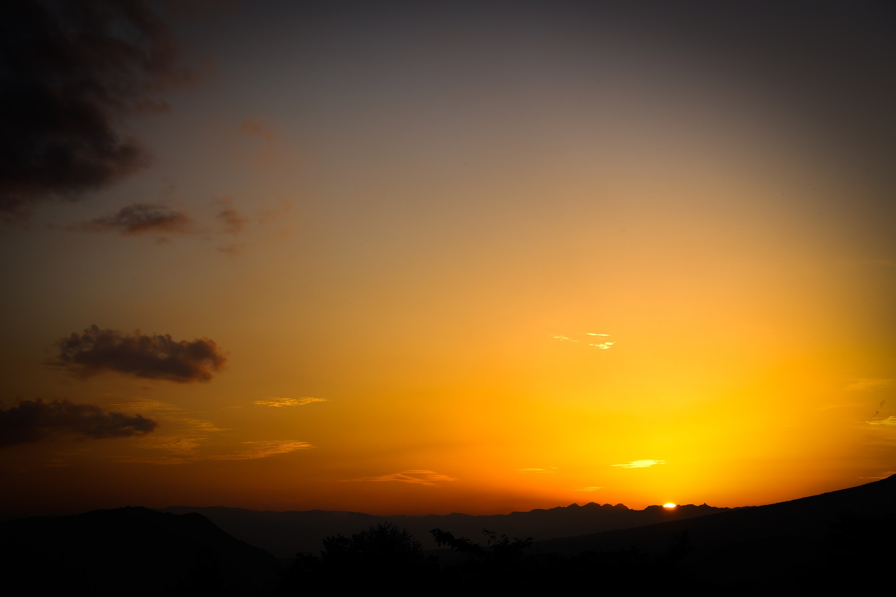

SANKIT산킷
KIT 067
같은 산, 다른 이름
스위스에선 마터호른
이탈리아에선 체르비노
산 하나가 국경 위에 서 있습니다. 북쪽은 스위스 체르마트, 남쪽은 이탈리아
브로이유-체르비니아입니다.
우리가 사진으로 많이 본 뾰족한 모습은 체르마트 쪽에서 본 것입니다.
이탈리아 쪽에서는 다른 면을 봅니다. 같은 산인데 다른 산처럼
보입니다.
이탈리아 스키장 이름 체르비니아(Cervinia)도, 스위스 쪽 전망대
클라인 마터호른을 이탈리아에서 피콜로 체르비노라 부르는 것도
모두 이 이름에서 왔습니다.
SANKIT산킷
KIT 067
알프스에서 가장 높은 국경
스키 없이도
국경을 넘습니다
두 나라 스키장은 원래 슬로프로 이어져 있었습니다. 스키를 타야만 넘을 수
있었습니다. 2023년 7월 1일, 마터호른 알파인 크로싱이 열리면서
스키를 신지 않아도 케이블카로 넘어갈 수 있게 됐습니다.
이탈리아 쪽 · 테스타 그리자 / 플라토 로사3,458 m
스위스 쪽 · 클라인 마터호른3,821 m 피콜로 체르비노
개통2023.07.01 마터호른 글래시어 라이드 II
알프스에서 가장 높은 곳에 있는 국경 통과 지점입니다.
SANKIT산킷
KIT 067
가실 거면 이것부터
겨울 한복판에
닫힙니다
공식 안내에 따르면 이 국경 케이블카는 정비를 위해
2027년 1월 7일부터 2월 26일까지 운행을 멈춥니다.
정비 휴장2027.01.07 ~ 02.26 마터호른 알파인 크로싱
한국에서 알프스로 가는 스키 여행은 1~2월에 몰립니다. 그 기간이
정확히 겹칩니다.
스키를 타고 슬로프로 넘는 길은 별개입니다. 다만 스키를 신지 않고
케이블카로 국경을 넘을 계획이셨다면 날짜를 다시 보셔야 합니다.
운행 일정은 바뀔 수 있습니다. 출발 전 cervinia.it에서 다시 확인하세요.

SANKIT산킷
보는 자리가 바뀌면
산도 달라집니다
산킷 한 줄 — 같은 산을 두 나라가 다른 이름으로 부릅니다.
어느 쪽에서 오르느냐에 따라 이름도, 모습도, 넘어가는 방법도 달라집니다.
저장해 두셨다가 알프스 일정 잡으실 때 날짜부터 확인하세요.
ⓒ SANKIT